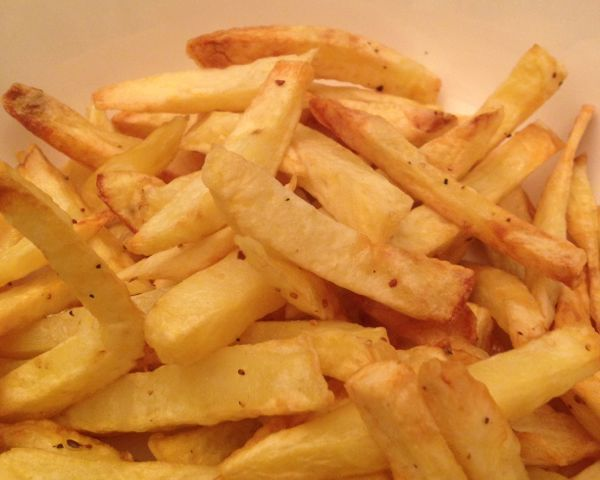

Oven Chips

Description
Quick to make and delicious oven chips!
Ingredients
6 potatoes
3 tbs olive oil
Steps
- Preheat oven to 220C.
- Cut potatoes into slices approximately 1 cm thick.
- Soak chips in cold water for 10 minutes, drain well, then pat dry with paper towels.
- Spread chips onto a baking tray, sprinkle with oil. Toss to coat.
- Bake for 45-55 minutes until golden and crisp, turning occasionally.
Home